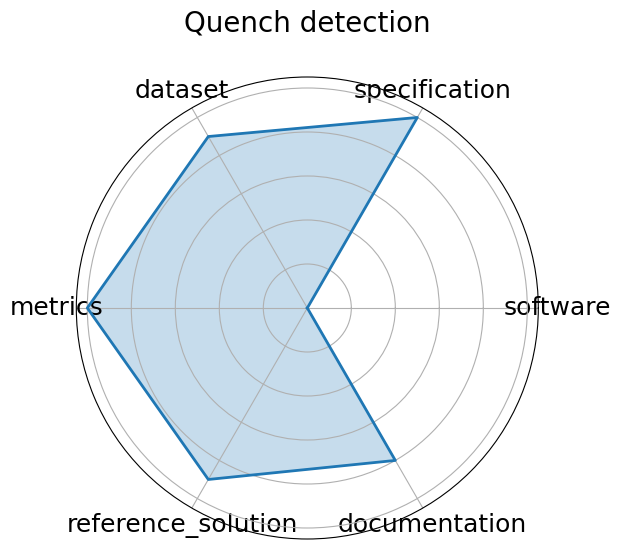

Date: 2024-10-15
Name: Quench detection
Domain: Accelerators and Magnets
Focus: Real-time detection of superconducting magnet quenches using ML
Keywords: quench detection, autoencoder, anomaly detection, real-time
Task Types: Anomaly detection, Quench localization
Metrics: ROC-AUC, Detection latency
Models: Autoencoder, RL agents in development
Citation:
Maira Khan, Steve Krave, Vittorio Marinozzi, Jennifer Ngadiuba, Stoyan Stoynev, and Nhan Tran. Benchmarking and interpreting real time quench detection algorithms. In Fast Machine Learning for Science Conference 2024. Purdue University, IN, October 2024. indico.cern.ch. URL: https://indico.cern.ch/event/1387540/contributions/6153618/attachments/2948441/5182077/fast_ml_magnets_2024_final.pdf.
bibtex: ``` @inproceedings{quench2024,
author = {Maira Khan and Steve Krave and Vittorio Marinozzi and Jennifer Ngadiuba and Stoyan Stoynev and Nhan Tran},
title = {Benchmarking and Interpreting Real Time Quench Detection Algorithms},
booktitle = {Fast Machine Learning for Science Conference 2024},
year = {2024},
month = oct,
address = {Purdue University, IN},
publisher = {indico.cern.ch},
url = {https://indico.cern.ch/event/1387540/contributions/6153618/attachments/2948441/5182077/fast_ml_magnets_2024_final.pdf}}
```
Ratings:
Software:
Rating: 1
Reason: Code not provided; no evidence of documentation or containerization
Specification:
Rating: 4
Reason: Real-time detection task is clearly described, but exact constraints, inputs/outputs, and evaluation protocol are only partially specified
Dataset:
Rating: 2
Reason: Dataset URL is missing; FAIR principles largely unmet
Metrics:
Rating: 3
Reason: ROC-AUC and latency are mentioned, but metric definitions and formal evaluation setup are missing
Reference Solution:
Rating: 1
Reason: No baseline or reproducible model implementation available
Documentation:
Rating: 2
Reason: Only a conference slide deck is available; lacks detailed instructions or repository for reproduction
Average Rating: 2.167
Radar Plot: 